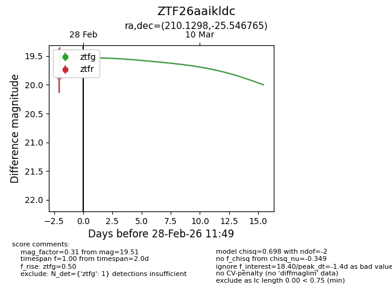
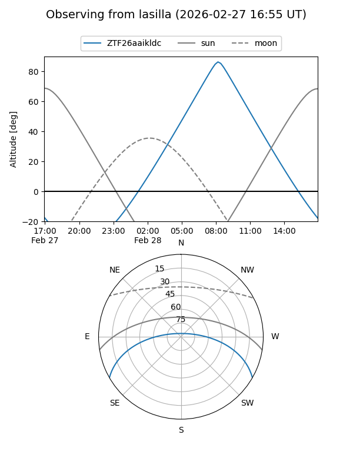
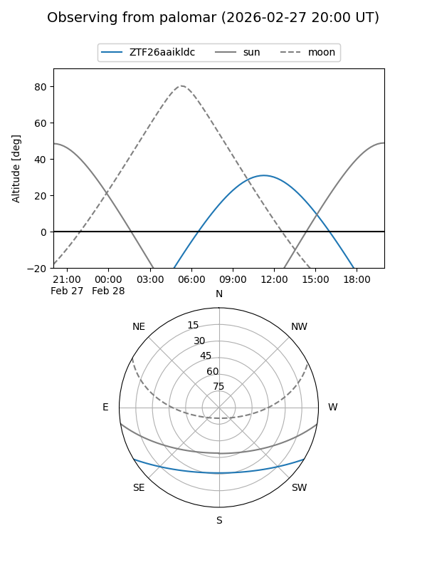
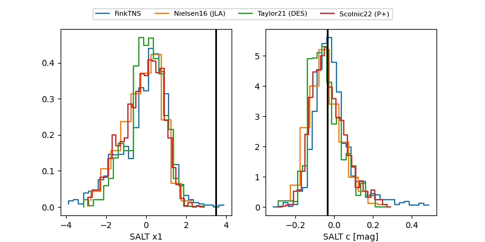

ZTF26aaikldc
Target ZTF26aaikldc at 2026-02-28 11:50
Aliases and brokers:
FINK: link
Lasair: link
ALeRCE: link
alt names
ZTF26aaikldc (ztf,fink_ztf)
Coordinates:
equatorial (ra, dec) = 210.1298,-25.54677
equatorial (HMS+DMS) = 14:00:31.15,-25:32:48.35
galactic (l, b) = (321.9603,+34.75948)
Flags:
Photometry:
last ztfg=19.51
1 ztfg detections
Lightcurve

Visibility


Additional plots
